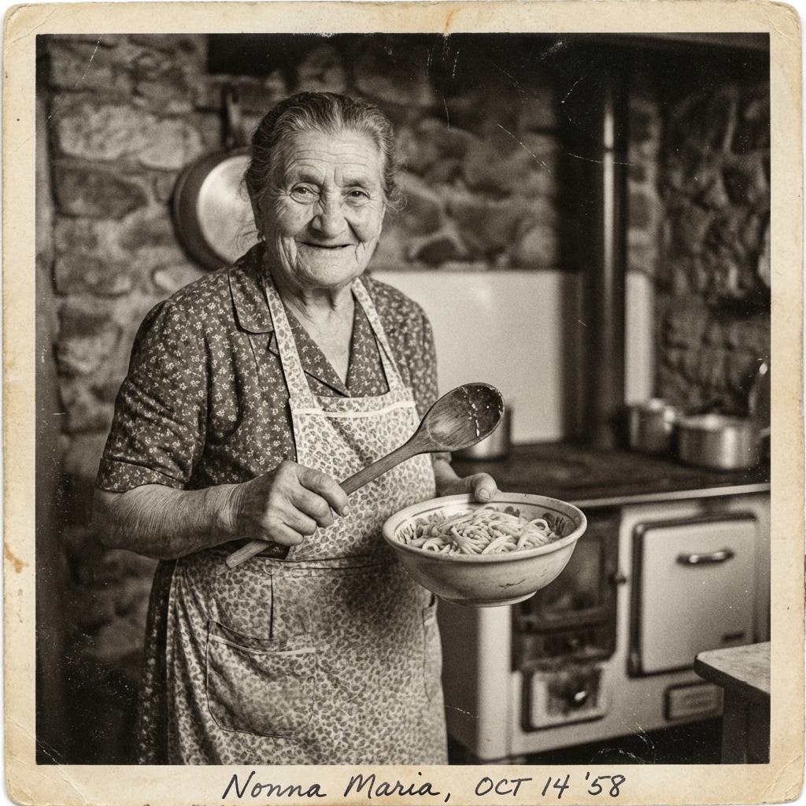

Polpettone
Polpettone alla Siciliana
Un secondo piatto ricco e saporito con olive e cipolle.

I segreti della cucina di una volta, conservati con amore.
Queste sono le ricette che ho cucinato per anni per la mia famiglia. Spero che possano portare la stessa gioia sulla vostra tavola.
Seleziona una categoria per vedere le ricette.
Nessuna ricetta presente.
Un secondo piatto ricco e saporito con olive e cipolle.
Un classico dolce bicolore sofficissimo.
Leggere e delicate, cotte al forno.
Le classiche zeppole soffici con patate.
La torta di mele profumata al limone.
Taralli dolci bolliti e poi passati al forno con glassa.
Crema dolce al cioccolato fondente.
Le zeppole della tradizione di Mamma Rosa.
Il classico Babà napoletano, ricetta di Elisa.
Soffice torta al cacao e mandorle.
Dolci tradizionali al miele.
Il dolce pasquale per eccellenza.
Dolci ripieni di castagne e cioccolato.
Deliziosi dolcetti alle nocciole e cacao.
Torta fresca a strati con ricotta e pavesini.
Delicati biscotti alle mandorle.
Profumata torta con succo e scorza d'arancia.
Dolci a forma di pesca farciti con doppia crema.
Base classica per crostate e biscotti.
Dolci di castagne e cioccolato (Ricetta Michela).
Salame dolce con biscotti, burro e cacao.
Dessert al cucchiaio con crema e savoiardi.
Liquore casalingo energizzante.
Variante profumata con erba di melissa.
Il classico liquore di limoni.
Liquore cremoso al limone.
Liquore dolce alle fragole.
Liquore profumato al mandarino.
Liquore denso e goloso al cioccolato.
Conserva di pesche sciroppate, ricetta di Ersilia.